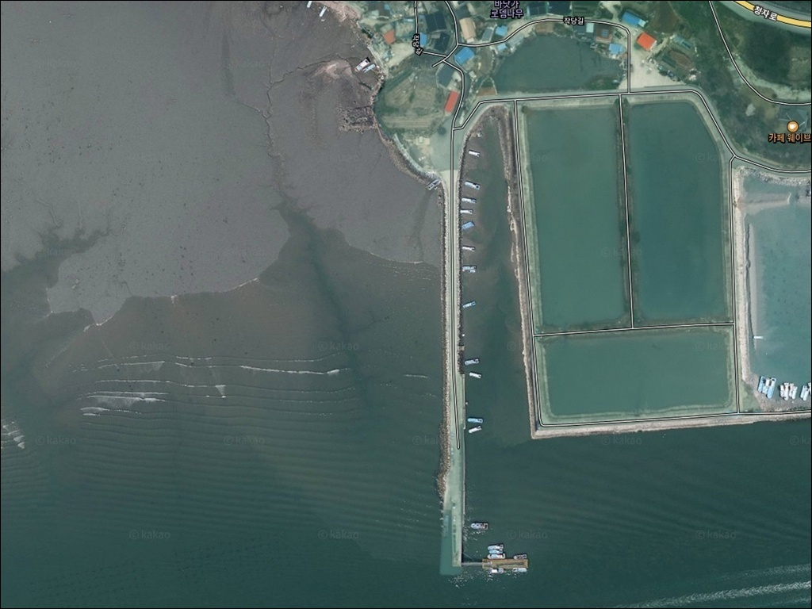
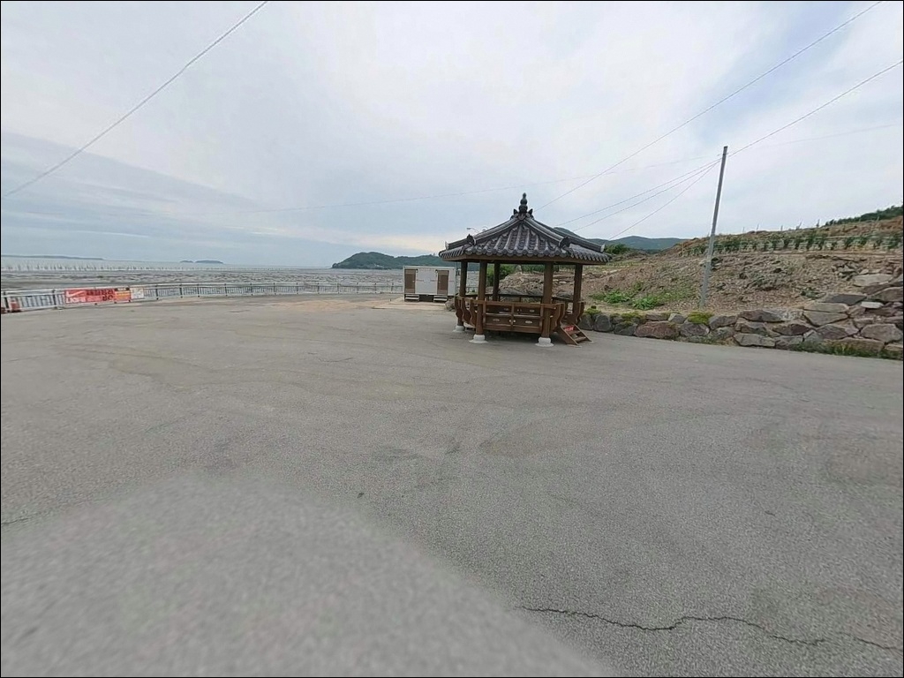
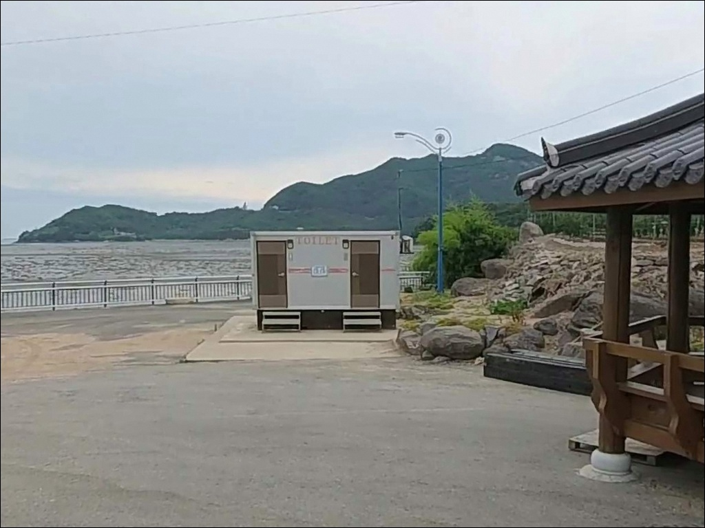
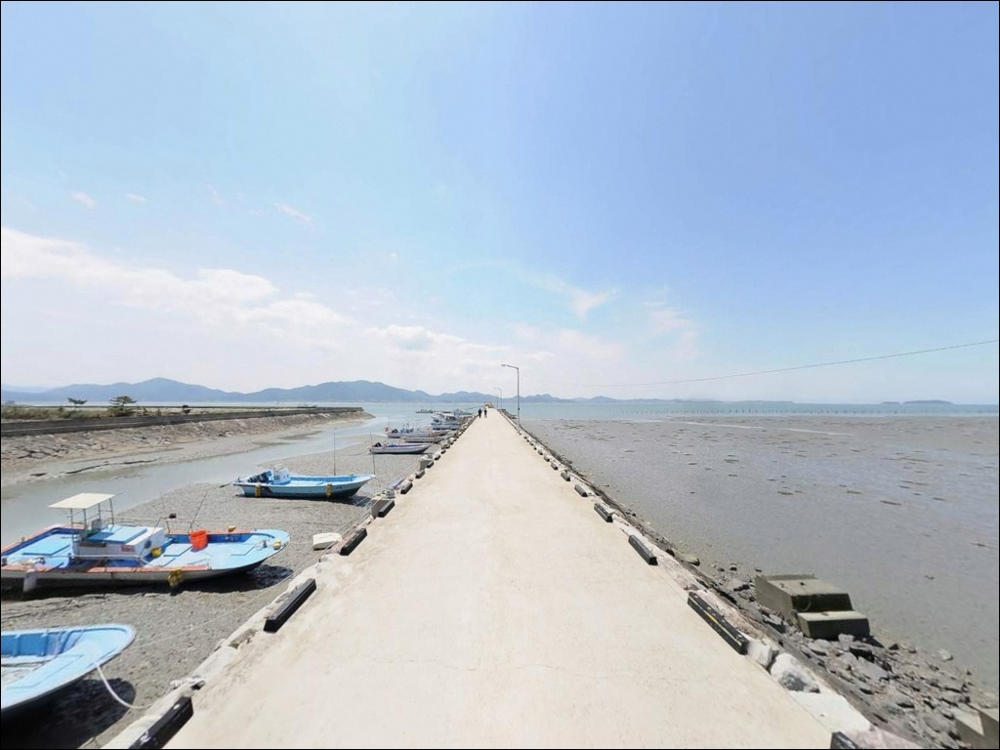
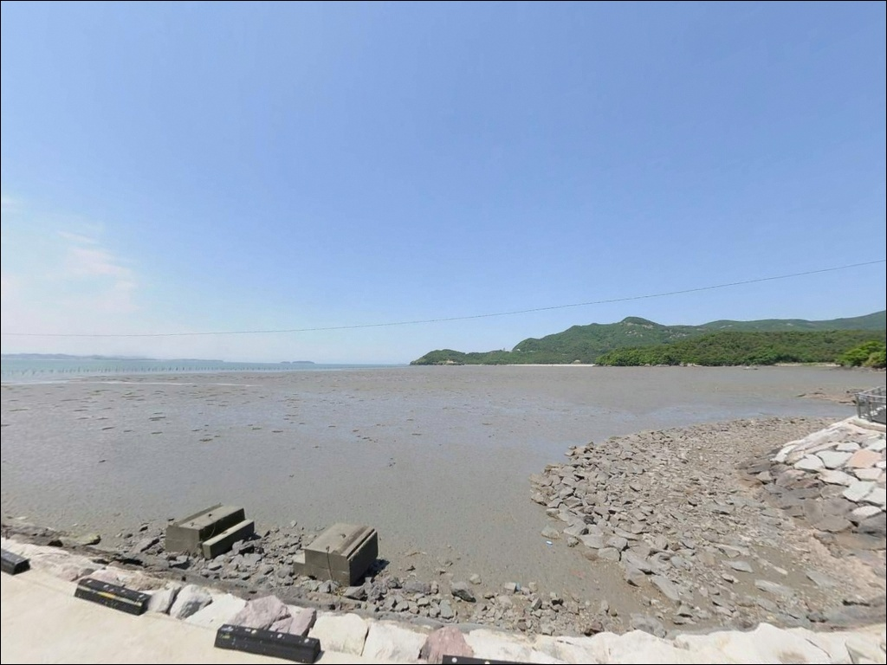
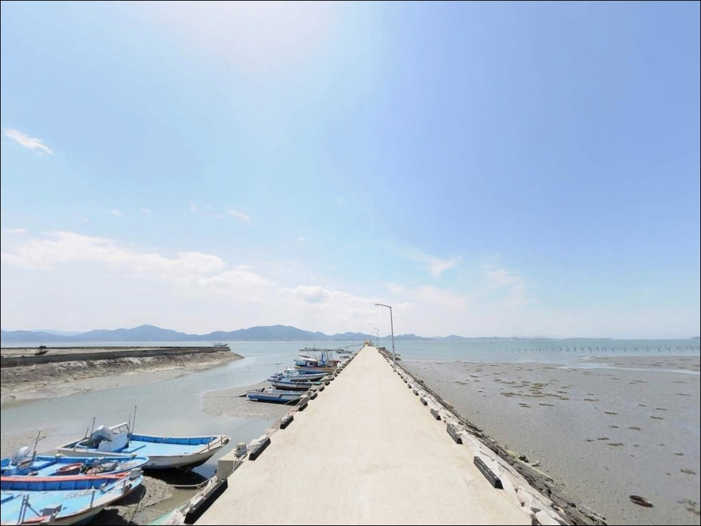
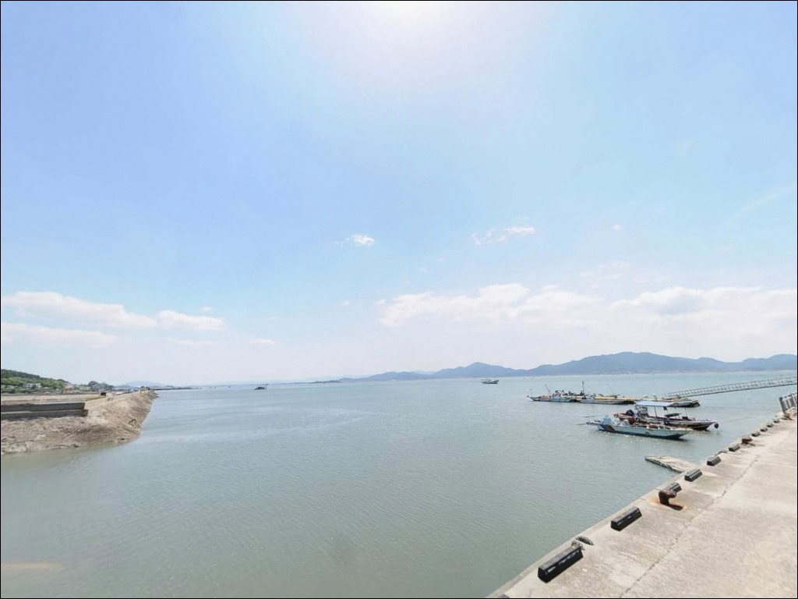
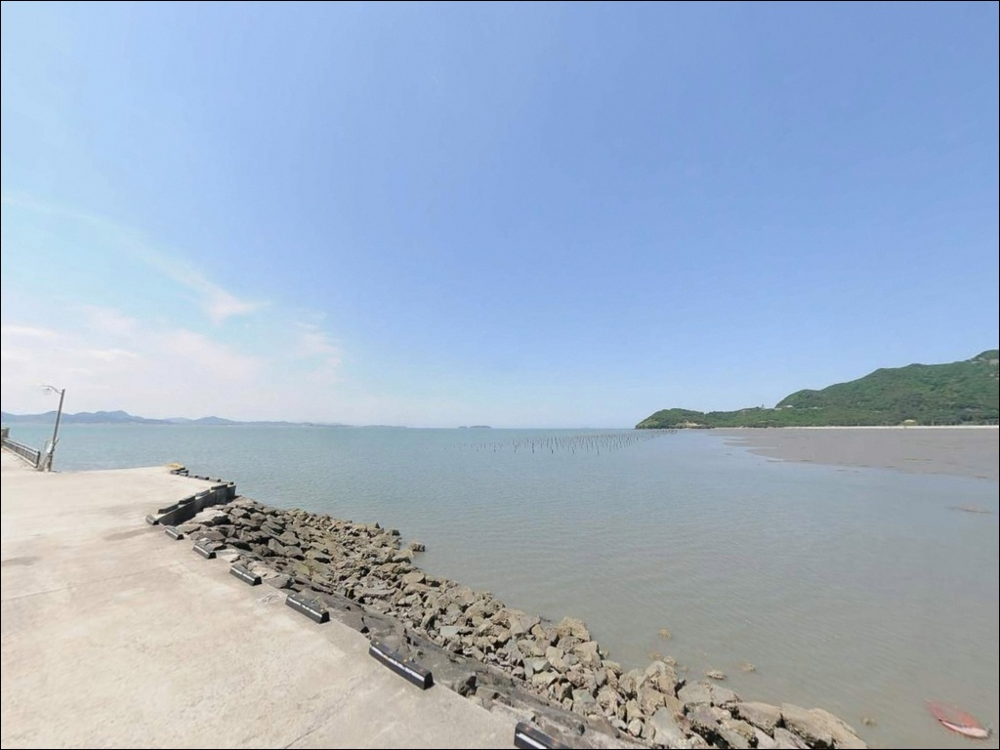
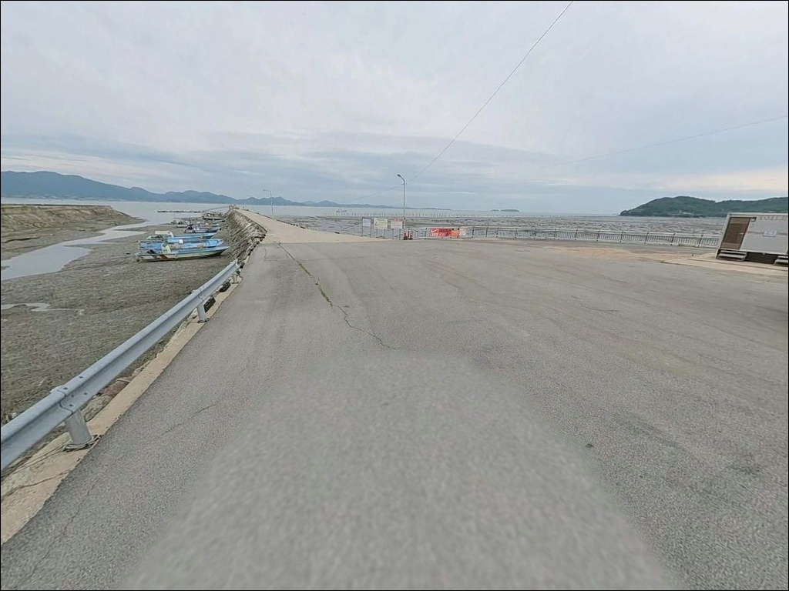

작당마을 선착장, 전북 부안군 자연 그대로의 분위기에서 차박, 낚시를 즐기기 좋은 포인트
이 페이지에는 광고(제휴 링크 포함)가 있으며, 광고 링크를 통해 구매하면 운영자가 판매 수익 또는 수수료를 받을 수 있습니다. 포인트 사진: 카카오맵 스카이뷰·로드뷰. 이 페이지의 지도·사진 이미지는 카카오맵의 실제 서비스 이미지와 다를 수 있습니다.


포인트 안내
작당마을 선착장
전북 부안군 진서면 운호리 281-1
곰소만 안쪽에서 물때 계산 없이 낚시 자리를 잡으면
간조 때 갯벌이 드러나면서
어떤 채비를 써도 포인트 진입 자체가 막힙니다.
작당마을 선착장은 조수간만의 차가
낚시 가능 여부를 직접 결정하는 구조의 포인트입니다.
이 글은 진입 여건, 물때 판단 기준,
낚시 스타일별 공략 조건, 대안 포인트 동선에 집중합니다.
조황 단정이나 특정 어종 보장은
이 글의 범위에 포함되지 않습니다.
전북 부안군 진서면 운호리,
변산반도 서쪽 해안선에 자리한 작당마을 선착장은
곰소만 북쪽 연안에 붙어 있는 소규모 어촌 선착장입니다.
인근 마동방조제, 왕포 방파제와 함께
운호리 해안선을 이루는 생활형 낚시 포인트 벨트 안에 위치하며,
대형 항구보다는
조용히 원투낚시를 노려보기 좋은
분위기의 한적한 선착장입니다.

1. 진입 동선과 포인트 접근성
작당마을은 30번 국도에서 분기되는
해안 방향 마을 도로를 따라 진입하는 구조입니다.
마을길 수준의 폭으로 이어지는 도로이지만
포장 상태는 비교적 안정적이며,
승용차나 소형 SUV 기준으로는
접근 자체에 큰 장애가 없는 수준입니다.
다만 마을 내부 진입로가 좁은 구간이 포함되어 있어
대형 캠핑카나 트레일러 차량이라면
출발 전 위성지도로 진입로를 미리 확인하는 것이 좋습니다.
선착장 주변은 소형 마을 선착장 구조상
회차 공간이 넉넉하지 않으므로
마을 입구 쪽에서 차량 방향을 먼저 잡아두는 방식이
현장에서 편합니다.
주차는 선착장 인근 공터나
마을 가장자리 여유 공간을 활용하는 방식이 일반적입니다.
어선 작업 공간과 겹치지 않도록
자리를 고르는 것이 기본 매너입니다.

2. 차박 환경과 야간 체류 여건
작당마을은 인구 밀도가 낮은 소규모 어촌 마을입니다.
야간에 차량 통행이 거의 없는 편이고
외항 노출이 적은 내만 위치라
파도 소음이 작아
수면 환경은 비교적 조용한 편입니다.
다만 민가와 선착장이 가까이 붙어 있는 구조상
프라이버시 여건이 넉넉하지 않습니다.
마을 특성상 가로등이 많지 않을 수 있어
야간에는 개인 조명 장비가 필수입니다.
낚시를 마친 뒤 조용히 하룻밤 차 안에서 머무는 용도로는
나쁘지 않은 환경이지만,
주차 공간이 협소한 편이라
차박을 메인으로 삼기 전에
현장 주차 공간부터 확인하는 것이 순서입니다.
작당마을 일대는 변산반도 국립공원
내소 지구 관리 구역에 포함됩니다.
국립공원 구역 내 지정 장소 외에서는
야영·취사가 원칙적으로 허용되지 않으므로,
방문 전 국립공원관리공단 또는
부안군 담당 기관에 확인이 먼저입니다.


3. 주변 편의시설 및 인프라 현황
작당마을 선착장 반경 3km 이내에는
편의점이나 마트 등 즉시 이용 가능한
생활 인프라를 기대하기 어렵습니다.
소규모 어촌 마을 특성상
식수·얼음·낚시 소품·연료는
출발 전 완비하는 것이 현실적인 준비 방식입니다.
반경 약 6km권으로 이동하면
곰소항 일대에 닿습니다.
곰소항은 어선 출입이 활발한 활성 어항으로
수산시장과 젓갈시장, 기본 편의시설을 갖추고 있어
부족한 소품이 생겼을 때 활용하기 좋은 동선입니다.
출발 전 곰소항에서 미리 보충하고
작당마을로 진입하는 순서가 효율적입니다.
응급 상황 발생 시 부안읍 방향으로
이동해야 하는 거리가 있으므로
비상약품과 충분한 수분 준비는
출발 전 기본으로 갖춰야 합니다.

4. 진입 전 반드시 챙겨야 할 준비사항
작당마을 선착장 방문 전
가장 먼저 확인할 것은 물때입니다.
곰소만은 서해안에서도 조수간만의 차가 큰 지역으로,
간조 시에는 선착장 주변 갯벌이 드러나
낚시 진입 자체가 막히는 상황이 됩니다.
바다타임에서 진서면 기준 물때를 확인하고
만조 전후 2~3시간 타이밍을 노려
출발 시각을 맞추는 것이 기본 전략입니다.
기상 변화에도 주의가 필요합니다.
내만 위치라 외해 파도 영향은 적지만
바람 방향과 세기에 따라
낚시 여건이 달라질 수 있습니다.
당일 아침 기상청 예보를 다시 한번 확인하고
풍랑 특보 발효 여부를 체크하는 것이
불필요한 헛걸음을 막는 조건입니다.
마을 선착장은 어민들의 생업 공간입니다.
어선 이동 동선과 어구 구역에
접촉하지 않도록 자리를 잡는 것이 기본 매너이며,
야간 낚시 시에는 헤드랜턴과 구명조끼를
반드시 챙겨야 합니다.
간조 시 갯벌 경계선에 접근하는 것은
미끄러짐과 고립 사고로 이어질 수 있으므로
주의가 필요합니다.

5. 갯벌 경계선이 만드는 낚시 여건
작당마을 선착장의 핵심은
곰소만 내만 구조가 만드는 지형 조건입니다.
만 전체가 얕고 갯벌이 넓게 발달해 있어
간조 때는 수심이 급감하지만,
들물이 들어오면서 갯벌 경계선을 따라
먹이 활동 어종이 따라오는 구간이
자연스럽게 형성됩니다.
선착장 끝단에서 외항 방향으로는
조류 소통이 이루어지는 구간이 형성됩니다.
이 구간은 수심이 상대적으로 확보되는 편이라
원투채비를 멀리 날려
바닥층을 탐색하기에 적합한 조건을 갖추고 있습니다.
바닥은 뻘 성분이 섞인 지형이어서
밑걸림은 크지 않은 편입니다.
조류는 만 입구 방향과 인천강 하구 방향으로 흐르는 구조로,
작당마을 위치는 조류 흐름이 완만한
정온 수역 성격이 강합니다.
빠른 조류 속에서의 루어 조과보다는
들물 타이밍에 집중하는 생활낚시 접근이
이 포인트에 맞는 방식입니다.
출조 전에 작당마을 선착장 또는 왕포항 일대
최신 조황을 검색해 보시기 바랍니다.


6. 이 포인트 지형에 맞는 낚시 스타일
이 포인트에서 가장 기본이 되는 낚시는
원투낚시입니다.
완만한 수심의 내만 갯벌형 환경에서는
채비를 멀리 날려 바닥을 탐색하는 방식이
지형 조건과 가장 잘 맞습니다.
붕장어, 망둑어, 숭어를 기대해 볼 수 있는 지형이며
만조 전후 들물 타이밍에 집중하는 것이
이 포인트의 기본 원칙입니다.
야간 루어낚시도 시도해 볼 만한 스타일입니다.
변산 서해권 해안선은 여름~가을 야간에
갈치·풀치 워킹 포인트로 이어지는 구간이며,
작당마을 선착장도 같은 해역 라인에 위치합니다.
선착장 가장자리를 따라
가벼운 루어로 연안 테두리를 천천히 탐색하는
방식이 야간 운용에 어울립니다.
찌낚시는 선착장 안쪽 정온 수역을 활용하는 방식입니다.
내항 성격의 잔잔한 수면 조건은
찌 움직임을 확인하기에 유리한 환경을 만들어 줍니다.
바람이 잠잠한 날 들물 초입 타이밍에
가벼운 채비로 선착장 인근을 탐색하는 방식이
이 포인트 조건에 잘 맞는 스타일입니다.

7. 작당마을이 여의치 않을 때 가야 할 대안 포인트
작당마을 선착장에서 물때가 맞지 않거나
주차 공간이 여의치 않을 때
가장 먼저 이동할 곳은
마동방조제입니다.
운호리 281-3으로 작당마을과 바로 인접한 위치이며,
원투낚시 포인트로 알려진 곳이라
낚시 정보도 비교적 찾기 수월합니다.
왕포 방파제도 같은 운호리 라인에 있는
현실적인 대안입니다.
방파제 구조상 다양한 낚시 방식을 운용하기에
좋은 조건을 갖추고 있어
원투낚시와 루어낚시를 함께 시도해 볼 수 있습니다.
운호리 해안선을 따라 연속으로
두 곳을 묶어 탐색하는 동선이
이 권역에서 가장 효율적입니다.
수심과 조류 조건이 더 좋은 포인트가 필요하다면
격포 방파제로 이동하는 것이 답입니다.
북방파제 610m 규모의 외항 노출형 방파제로
숭어, 학꽁치, 붕장어, 우럭, 감성돔 등
다양한 어종을 노릴 수 있고,
낚시점과 편의시설도 집중되어 있어
채비 보충도 현장에서 해결됩니다.

물때를 알면
작당마을 선착장이 달라 보입니다
원투낚시와 야간 루어 위주의 생활낚시를
즐기는 낚시인이라면
작당마을 선착장의 지형 조건은
잘 맞는 구조입니다.
대형 항구처럼 번잡하지 않고
소수 인원이 조용히 자리를 잡기 좋은
한적한 분위기의 포인트입니다.
다만 물때 계산 없이 간조 시간대에 방문하거나
국립공원 구역 내 야영 규정을 미리 확인하지 않으면
낚시와 차박 모두 여의치 않은 상황이 생깁니다.
물때 확인, 국립공원 규정 확인, 자급 준비,
이 세 가지를 갖추고 간다면
운호리 해안선을 제대로 즐길 수 있는
출조가 됩니다.
마동방조제, 왕포 방파제와 함께
하루 동선으로 묶어 탐색하면
낚시와 조용한 차박을 동시에 즐길 수 있는
변산 서해권 여정이 됩니다.